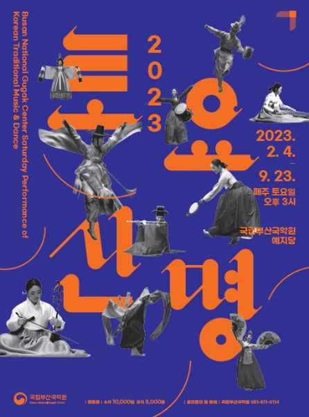
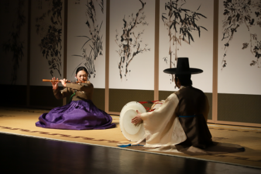
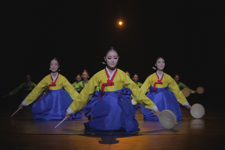

토요상설 <토요신명 2023> Saturday Concert <2023 Saturday performance of Korean music and dance>
- Time
- 2. 4. ~ 9. 23. Every Saturday 15:00
- Venue
- Yeji-dang Hall
- Ticket Price
- A seat 10,000won, B seat 8,000won
- Cast/Direct
- Busan National Gugak Center Music Groups
- Audience Age
- Children in elementary school or older
Every Saturday we can enjoy Korean music and dance full of natural beauty and warm sentiments.
The multi artistic programs with music, dance, and songs have six themes. Like the clouds moves by the wind bringing rains, and as colorful rainbow appears with the sun even after the thundery weather, the music and dance programs provide the audience a comfortable time full of encouragement and hope.
Themes and Programs
-The first theme: Breezy wind -The second theme: Sailing cloud -The third theme: Sprinkle rain -The fourth theme: Roaring thunder -The fifth theme: Vivid rainbow -The sixth theme: Sunny sky
Feb.
4
The First theme
Wind Ensemble ‘Jajinhanip’, Pansori, Mugo, Geumhoebukchum, Gayageum Sanjo, Utdari Nongakgarak
11
The Second theme
Suryongeum, Gagok, Jinju Gyobang Gutgeorichum, Jinsoechum, Haegeum Sanjo, Samdo Nongakgarak
18
The Third theme
Cheonnyeonmanse,
Gayageum Byeongchang, Seungmu,
Daegeum Sanjo, Namdo Minyo,
Ganggangsullae
25
The Fourth theme
Danso Solo/Sanjo,
Ipchechang, Chunaengjeon, Gyeonggi/
Seodo Minyo, Ajaeng Sanjo, Jinju
Geommu
Mar.
4
Dance Theater Regular Concert
11
Traditional Music Orchestral Regular Concert
18
The Fifth theme
Gwanak Yeongsan-
hoesang ‘Sangryeongsan,’ Gasa,
Jangguchum, Dongnae Hakchum,
Geomungo Sanjo, Taepyeongso and nori
25
The Sixth theme
Daegeum Solo
‘Sangryeongsan puri,’ Gyeonggi Japga,
Beokkuchum, Buchaechum, Piri Sanjo,
Donghae Musok
Apr.
1
Folk Performance Group Regular Concert
8
The First theme
Wind Ensemble
‘Jajinhanip’, Pansori, Mugo,
Geumhoebukchum, Gayageum Sanjo,
Utdari Nongakgarak
15
Traditional Vocal Music Group Regular Concert
22
The Second theme
Suryongeum,
Gagok, Jinju Gyobang Gutgeorichum,
Jinsoechum, Haegeum Sanjo, Samdo
Nongakgarak
29
The Third theme
Cheonnyeonmanse,
Gayageum Byeongchang, Seungmu,
Daegeum Sanjo, Namdo Minyo,
Ganggangsullae


